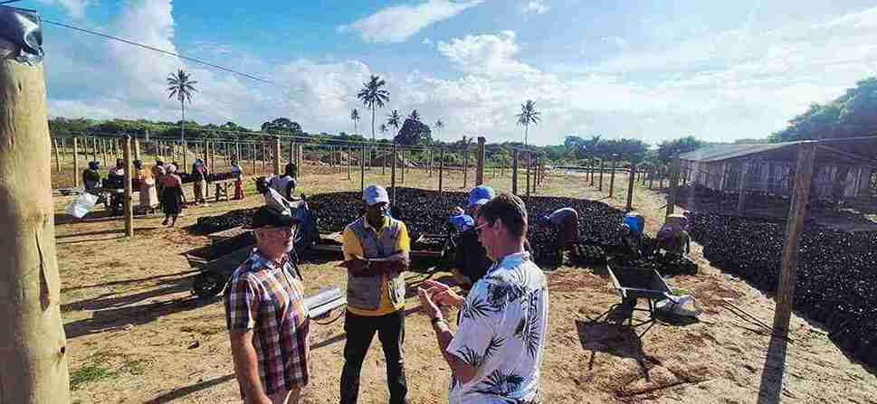
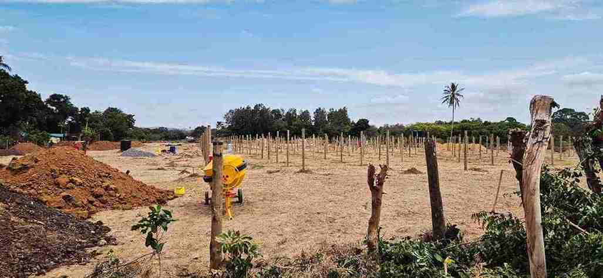

High-Quality Tree Seedlings
At Crescendo Green, we believe that successful tree planting starts with exceptional planting material. We produce healthy, climate-resilient tree seedlings for commercial forestry, agroforestry, ecosystem restoration, biodiversity conservation, landscaping and agricultural value chains. Our propagation systems are designed to maximise root development, reduce transplant shock and achieve high survival rates under field conditions.
Quality is embedded throughout our production process. We carefully select seed sources, use well-balanced growing media and appropriate container sizes, apply rigorous nursery hygiene protocols and implement structured hardening procedures before dispatch. Drawing on years of practical experience, we recognise that investments in larger, healthier seedlings often translate into better establishment, faster growth and lower replacement costs in the field.
Our facilities are being developed to meet the highest professional standards, including compliance with Kenyan regulatory requirements such as KEPHIS certification where applicable. We also collaborate with research institutions and technical partners to continuously improve propagation techniques, particularly for indigenous and drought-tolerant species.
Beyond production, we advise clients on species selection, nursery planning and planting strategies tailored to local rainfall, soils and project objectives. Whether supplying indigenous trees for restoration, Melia volkensii for commercial forestry or crop trees such as moringa and cashew, our goal is to deliver planting material that performs reliably and supports long-term project success.

Consultancy & Management
Crescendo Green provides strategic consultancy and management services for forestry, agroforestry, ecosystem restoration and sustainable land-use initiatives across Africa. Our advice combines technical expertise with practical field experience, enabling clients to move from concept to implementation with confidence.
We support organisations throughout the project lifecycle, including feasibility studies, species selection, nursery planning, restoration strategies, operational design and implementation planning. Our team also assists with value chain development for timber and tree crops, helping clients identify opportunities in production, processing, marketing and market access while strengthening commercial viability.
For organisations requiring additional capacity, we offer project management and operational coordination services. This may include procurement support, contractor supervision, staff training, budgeting, work planning and stakeholder engagement. Through our network of experienced affiliate specialists and strategic partners, we can assemble multidisciplinary teams tailored to specific project requirements.
Our consultancy is particularly relevant for carbon developers, NGOs, governments and private investors seeking technically sound and operationally realistic solutions. By combining strategic thinking with lessons learned from large-scale propagation and field implementation, Crescendo Green helps clients reduce risk, improve efficiency and create resilient forestry and restoration programmes with lasting environmental and economic impact.

Monitoring & Operations
Delivering successful forestry and restoration projects requires more than planting trees—it demands disciplined implementation, continuous monitoring and adaptive management. Crescendo Green supports clients through every stage of project execution, from operational planning and field mobilisation to long-term supervision and performance monitoring.
We provide outsourced operational support for organisations that require experienced teams to manage propagation, planting campaigns, outgrower programmes and restoration activities. Depending on client needs, our services can include field coordination, contractor management, quality assurance, survival assessments, growth monitoring, data collection and periodic reporting. We also assist with developing practical monitoring frameworks and key performance indicators to track implementation progress and inform adaptive management.
Our experience in large-scale nursery operations and practical forestry enables us to identify challenges early and recommend timely corrective actions, helping clients improve survival rates, reduce costs and maximise long-term productivity. For carbon and restoration projects, robust monitoring systems also provide valuable evidence for reporting environmental outcomes and demonstrating responsible project management.
Whether acting as a technical advisor, implementation partner or outsourced operations manager, Crescendo Green delivers reliable, transparent and results-oriented support. Our objective is simple: to help clients establish healthy, productive landscapes that generate measurable ecological, social and commercial value over the long term.
Tree Nursery Development
Crescendo Green provides end-to-end support for the planning, construction and operation of professional tree nurseries across Africa. Whether you require a turnkey solution or targeted technical assistance, we help clients establish efficient, scalable and cost-effective propagation facilities tailored to their objectives.
Our services include nursery design, procurement of high-quality materials and equipment, irrigation systems, shade structures, logistics, integrated pest and disease management, substrate development and operational workflows. We also train nursery staff and management teams, ensuring long-term capacity through structured knowledge transfer.
Through our partnership with Growpact Global and our own practical experience in large-scale propagation, we bring proven expertise to every project. Beyond nursery operations, we advise on species selection, seed sourcing, production planning, value chains, processing and market opportunities, enabling clients to build resilient and commercially viable forestry, restoration and agroforestry programmes.